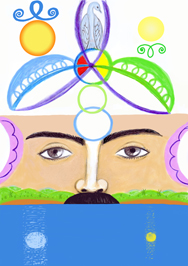

Фазовый Портрет Байкала

ФП Байкала был создан в 2011 году (31 июля – 3 августа). В физиологической проекции озеро Байкал выполняет для планеты Земля функцию правой почки. Создание фазового портрета корректирует ее работу.
На ФП обозначены три уровня: вода, земной план и духовный. Мужской Образ проявлен на фоне возрождающейся земли (чистые берега, горы, зеленые леса). Речь Мужчины сокрыта водой, которая является зеркалом духовного плана. В воде мы видим отражение небесных светил – Солнца (ян-символ) и Луны (инь-символ). Суть слова «Байка-л»: «сказка любви». В итоге коррекции "голос" Байкала, в соответствии со своим назначением обретает свойство плазмы Слова. Переход к духовному плану происходит через символы, расположенные в области Аджна-чакры. Это символы гармонии ян-инь: два круга зеленого и синего цвета, соединенные в символе семьи. В духовном квадрате мы видим символ Солнца, источника янской энергии для Земли, над ним – Символ Жизни янского происхождения (Ключ со спиралями). Справа – Луна, источник иньской энергии для Земли, под ней – также Символ Жизни иньского происхождения.
На челе Мужского Образа изображен Трилистник. В верхнем лепестке – образ Птицы, Духа Земли (результат коррекции информации воды озера Сайма). Второй и третий лепестки – духовные Крылья Байкала. Синее, янское крыло, питается энергией Солнца и восходит к духовному квадрату. Зеленое, иньское крыло, взаимодействует с образом Луны и находится во втором квадрате, квадрате будущего. Их гармонизация реализуется Ключом Жизни фиолетового цвета, расположенного на уровне чакры Сахасрара, отвечающей за взаимодействие с духовным планом.
В круг, обозначающий центр Трилистника, вписаны руны «Эль», «Аль-Го», «Кийг», "Аль-Го". Рунный код и Ключи внутри Крыльев задают позитивные метаморфозы, необходимые для коррекции живой экосистемы Байкал. И в том числе способствуют исцелению заболеваний почек, возникающих при угнетении духовного тела человека.